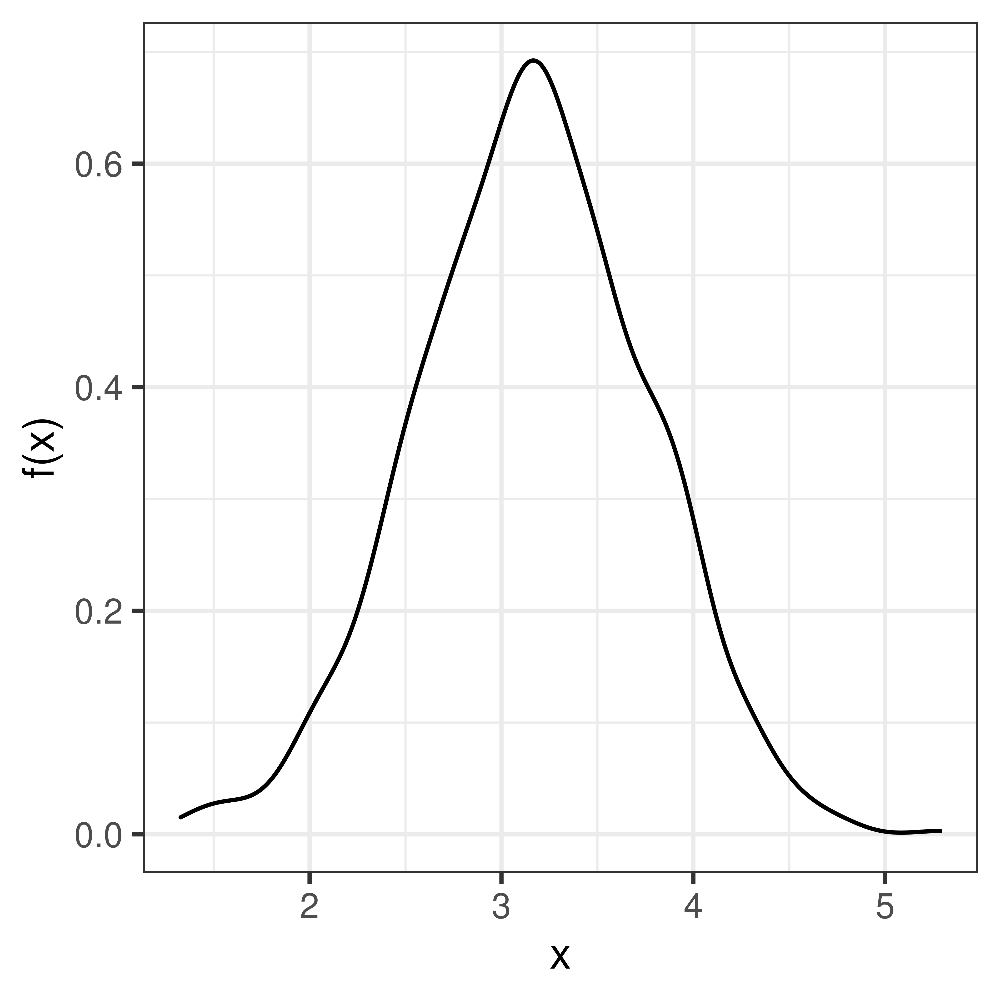
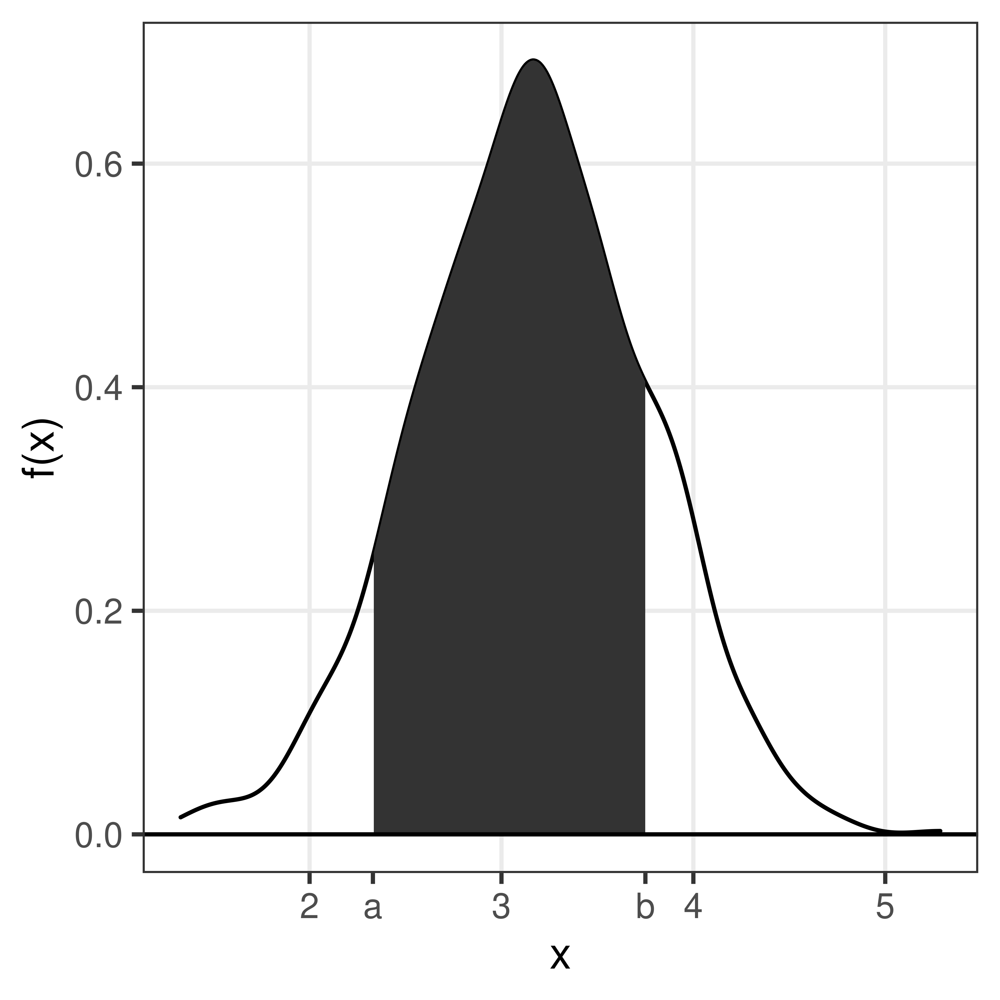
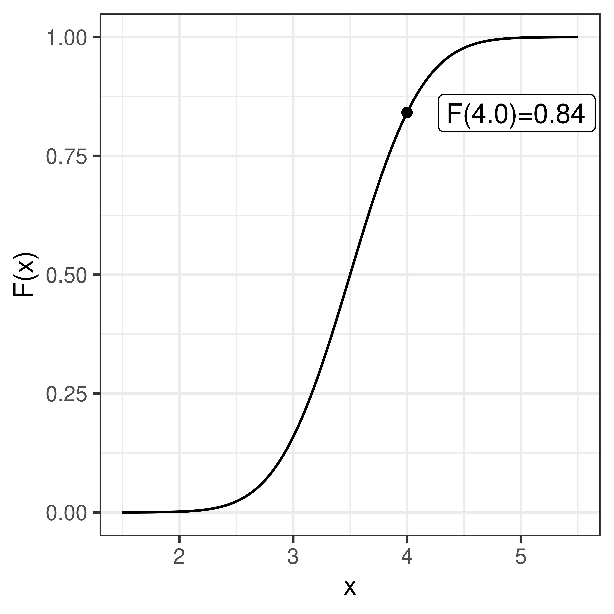
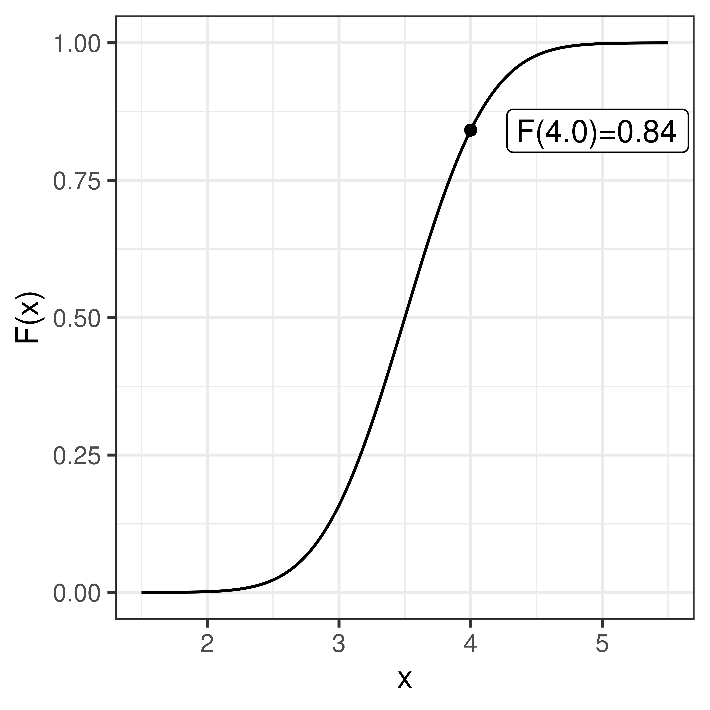
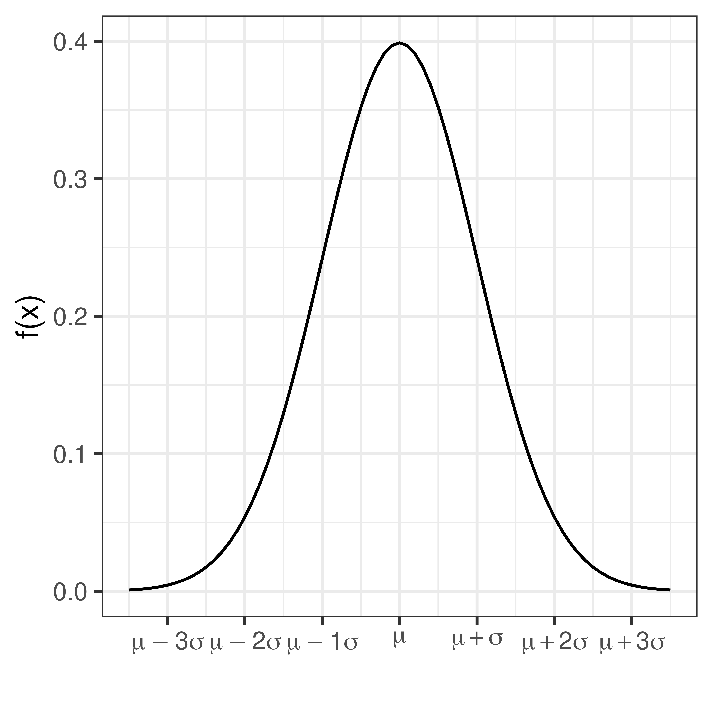
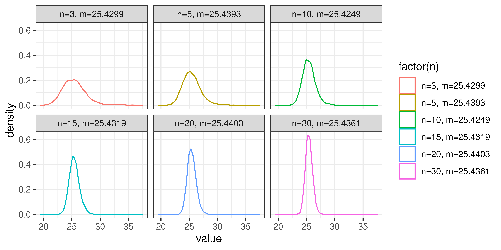

Probability theory, inference and clustering
1 Probability theory
Learning outcomes
- understand the concept of random variables
- understand the concept of probability
- understand and learn to use resampling to compute probabilities
- understand the concept probability mass function
- understand the concept probability density function
- understand the concept cumulative distribution functions
- use normal distribution
- understand the central limit theorem
1.1 Introduction to probability
Some things are more likely to occur than others. Compare:
- the chance of the sun rising tomorrow with the chance that no-one is infected with COVID-19 tomorrow
- the chance of a cold dark winter in Stockholm with the chance of no rainy days over the summer months in Stockholm
We intuitively believe that the chance of sun rising or dark winter occurring are enormously higher than COVID-19 disappearing over night or having no rain over the entire summer. Probability gives us a scale for measuring the likeliness of events to occur. Probability rules enable us to reason about uncertain events. The probability rules are expressed in terms of sets, a well-defined collection of distinct objects.
Suppose we perform an experiment that we do not know the outcome of, i.e. we are uncertain about the outcome. We can however list all the outcomes that might occur.
- sample space is the set \(S\) of these possible outcomes of the experiment, e.g. getting 1, 2 etc. on the 6-sided dice \(S=\{1,2,3,4,5,6\}\)
- an event is a subset of the sample space
- an event is said to occur if the outcome of the experiment belong to this set
- \(E'\)complement of the event \(E\) contains all the outcomes in \(S\) which are not in \(E\)
- \(E \cap F = \emptyset\) are said to be disjoint
1.1.1 Axioms of probability
- \(0 \leq P(E) \leq 1\) for any event \(E \subseteq S\)
- \(P(S) = 1\)
- if \(E\), \(F\) are disjoint events, then \(P(E \cup F) = P(E) + P(F)\)
1.1.2 Common rules and theorems
- probability of the complement: let \(E \subseteq S\) be any event, then \(P(E') = 1 - P(E)\)
- probability of the impossible event: \(P(\emptyset)=0\)
- inequality of the probability of a subset: let \(E,F \subseteq S\) be events such that \(E \subseteq F\) then \(P(F) \geq P(E)\)
- the probability of a union: let \(E,F \subseteq S\) be any two events, then \(P(E \cup F) = P(E) + P(F) - P(E \cap F)\)
1.1.3 Conditional probability
- let \(E,F \subseteq S\) be two events that \(P(E)>0\) then the conditional probability of \(F\) given that \(E\) occurs is defined to be: \[P(F|E) = \frac{P(E\cap F)}{P(E)}\]
Product rule follows conditional probability: let \(E,F \subseteq S\) be events such that \(P(E)>0\) then: \[P(E \cap F) = P(F|E)P(E)\]
1.1.4 Random variables
The outcome of a random experiment can be described by a random variable.
Whenever chance is involved in the outcome of an experiment the outcome is a random variable.
A random variable can not be predicted exactly, but the probability of all possible outcomes can be described.
A random variable is usually denoted by a capital letter, \(X, Y, Z, \dots\). Values collected in an experiment are observations of the random variable, usually denoted by lowercase letters \(x, y, z, \dots\).
The population is the collection of all possible observations of the random variable. Note, the population is not always countable.
A sample is a subset of the population.
Example random variables and probabilites:
- The weight of a random newborn baby, \(W\). \(P(W>4.0kg)\)
- The smoking status of a random mother, \(S\). \(P(S=1)\)
- The hemoglobin concentration in blood, \(Hb\). \(P(Hb<125 g/L)\)
- The number of mutations in a gene
- BMI of a random man
- Weight status of a random man (underweight, normal weight, overweight, obese)
- The result of throwing a die
Conditional probability can be written for example \(P(W \geq 3.5 | S = 1)\), which is the probability that \(X \geq 3.5\) if \(S = 1\), in words “the probability that a smoking mother has a baby with birth weight of 3.5 kg or more”.
1.1.5 The urn model
The urn model is a simple model commonly used in statistics and probability. In the urn model real objects (such as people, mice, cells, genes, molecules, etc) are represented by balls of different colors. A fair coin can be represented by an urn with two balls representing the coins two sides. A group of people can be modelled in an urn model, if age is the variable of interest, we write the age of each person on the balls. If we instead are interested in if the people are allergic to pollen or not, we color the balls according to allergy status.


Figure 1.1: Urn models of a fair coin, age of a group of people, pollen allergy status of a group of people.
By drawing balls from the urn with (or without) replacement probabilities and other properties of the model can be inferred.
1.2 Discrete random variables
A discrete random number has countable number of outcome values, such as {1,2,3,4,5,6}; {red, blue, green}; {tiny, small, average, large, huge} or all integers.
A discrete random variable can be described by its probability mass function, pmf.
The probability that the random variable, \(X\), takes the value \(x\) is denoted \(P(X=x) = p(x)\). Note that:
- \(0 \leq p(x) \leq 1\), a probability is always between 0 and 1.
- \(\sum p(x) = 1\), the sum over all possible outcomes is 1.
The probability mass function of a fair six-sided die can be summarized in a table;
| x | 1.00 | 2.00 | 3.00 | 4.00 | 5.00 | 6.00 |
| p(x) | 0.17 | 0.17 | 0.17 | 0.17 | 0.17 | 0.17 |
or in a barplot;
Figure 1.2: Probability mass function of a die.
| non-smoker | smoker | |
|---|---|---|
| x | 0 | 1 |
| p(x) | 0.61 | 0.39 |

Figure 1.3: Probability mass distribution of the number of bacterial colonies on an agar plate.
1.2.1 Expected value
When the probability mass function is know the expected value of the random variable can be computed.
\[E[X] = \mu = \sum_{i=1}^N x_i p(x_i)\] For a uniform distribution, where every object has the same probability (in the urn model, every object is represented by one ball), the expected value can be computed as the sum of all objects divided by the total number of objects;
\[E[X] = \mu = \frac{1}{N}\sum_{i=1}^N x_i\]
1.2.2 Variance
The variance is a measure of spread and is defined as the expected value of the squared distance from the population mean;
\[var(X) = \sigma^2 = E[(X-\mu)^2] = \sum_{i=1}^n (x_i-\mu)^2 p(x_i)\]
1.2.3 Simulate distributions
Once the distribution is known, we can compute probabilities, such as \(P(X=x), P(X<x)\) and \(P(X \geq x)\). If the distribution is not known, simulation might be the solution.
The outcome of a single coin toss is a random variable, \(X\) with two possible outcomes \(\{H, T\}\). We know that \(P(X=H) = 0.5\). The random variable of interest is the number of heads in 20 coin tosses, \(Y\). The probability that we need to compute is \(P(Y \geq 15)\).
Figure 1.4: A coin toss. Urn model with one black ball (heads) and one white ball (tails).
A single coin toss can be modelled by an urn with two balls. When a ball is drawn randomly from the urn, the probability to get the black ball (heads) is \(P(X=H) = 0.5\).
If we want to simulate tossing 20 coins (or one coin 20 times) we can use the same urn model, if the ball is replaced after each draw.
In R we can simulate random draws from an urn model using the function sample.
## [1] "H"## [1] "H"Every time you run sample a new coin toss is simulated.
The argument size tells the function how many balls we want to draw from the urn. To draw 20 balls from the urn, set size=20, remember to replace the ball after each draw!
## [1] "T" "T" "H" "T" "H" "T" "H" "H" "H" "T" "H" "H" "H" "T" "T" "H" "T" "T" "H"
## [20] "H"How many heads did we get in the 20 random draws?
## [1] 11We can repeat this experiment (toss 20 coins and count the number of heads) several times to estimate the distribution of number of heads in 20 coin tosses.
To do the same thing several times we use the function replicate.
To simulate tossing 20 coins and counting the number of heads 10000 times, do the following;
Nheads <- replicate(10000, {
coins <- sample(c("H", "T"), size=20, replace=TRUE)
sum(coins == "H")
})Plot distribution of the number of heads in a histogram.

Now, let’s get back to the question; when tossing 20 coins, what is the probability of at least 15 heads?
\(P(X \geq 15)\)
Count how many times out of our 10000 exeriments the number is 15 or greater
## [1] 185From this we conclude that
\(P(X \geq 15) =\) 185/10000 = 0.02
1.2.4 Parametric discrete distributions
1.2.4.1 Bernoulli trial
A Bernoulli trial is a random experiment with two outcomes; success and failure. The probability of success, \(P(success) = p\), is constant. The probability of failure is \(P(failure) = 1-p\).
When coding it is convenient to code success as 1 and failure as 0.
The outcome of a Bernoulli trial is a discrete random variable, \(X\).
\[p(x) = \left\{ \begin{array}{ll} p & \mathrm{if}\,x=1\mathrm,\,success\\ 1-p & \mathrm{if}\,x=0\mathrm,\,failure \end{array} \right.\]
Using the definitions of expected value and variance it can be shown that;
\[E[X] = p\\ var(X) = p(1-p)\]
1.2.4.2 Binomial distribution
The number of successes in a series of independent and identical Bernoulli trials is a discrete random variable, \(X\).
\(X = \sum_{i=0}^n Z_i,\)
where all \(Z_i\) describe the outcome of independent and identical Bernoilli trials with probability \(p\) for success (\(P(Z_i=1) = p\)).
The probability mass function of \(X\) is called the binomial distribution. In short we use the notation;
\[X \in Bin(n, p)\]
The probability mass function is
\[P(X=k) = {n \choose k} p^k (1-p)^{n-k}\] It can be shown that
\[E[X] = np\\ var(X) = np(1-p)\]
The binomial distribution occurs when sampling \(n\) objects with replacement from an urn with objects of two types, of which the interesting type has probability \(p\).
The probability mass function, \(P(X=k)\) can be computed using the R function dbinom and the cumulative distribution function \(P(X \leq k)\) can be computed using pbinom.
1.2.4.3 Hypergeometric distribution
The hypergeometric distribution occurs when sampling \(n\) objects without replacement from an urn with \(N\) objects of two types, of which the interesting type has probability \(p\).
The probability density function
\[P(X=k) = \frac{{Np \choose x} {N-Np \choose n-x}}{N \choose n}\]
can be computed in R using dhyper and the cumulative distribution function \(P(X \leq k)\) can be computed using phyper.
1.2.4.4 Poisson distribution
The Poisson distribution describe the number of times a rare event occurs in a large number of trials.
A rare disease has a very low probability for a single individual. The number of individuals in a large population that catch the disease in a certain time period can be modelled using the Poisson distribution.
The probability mass function;
\[P(X=k) = \frac{\mu}{k!}e^{-\mu},\] where \(\mu\) is the expected value, which is \(\mu = n \pi\), where \(n\) is the number of objects sampled from the population and \(\pi\) is the probability of a single object.
The Poisson distribution can approximate the binomial distribution if \(n\) is large (\(n>10\)) and \(\pi\) is small (\(\pi < 0.1\)).
1.2.4.5 Distributions in R
Probability mass functions, \(P(X=x)\), for the binomial, hypergeometric and Poisson distributions can in R can be computed using functions dbinom, dhyper, and dpois, respectively.
Cumulative distribution functions, \(P(X \leq x)\) can be computed using pbinom, phyper and ppois.
Also, functions for computing an \(x\) such that \(P(X \leq x) = q\), where \(q\) is a probability of interest are available using qbinom, qhyper, and qpois.
Exercises: Discrete random variables
Introduction to probability
Simulation
Exercise 1.3 In a single coin toss the probability of heads is 0.5.
In 20 coin tosses,
- what is the probability of exactly 15 heads?
- what is the probability of less than 7 heads?
- What is the most probable number of heads?
- what is the probability of 5 tails or less?
- what is the probability of 2 heads or less?
Exercise 1.4 When rolling 10 six-sided dice, study the number of sixes.
- Define the random variable of interest
- What are the possible outcomes?
- Using simulation, estimate the probability mass function
- what is the probability to get at least 5 sixes?
- Which is the most likely number of sixes?
- What is the probability to get exactly 2 sixes?
- On average how many sixes do you get when throwing ten dice?
Parametric discrete distributions
Exercise 1.11 (Gene set enrichment analysis) You have analyzed 20000 genes and a bioinformatician you are collaborating with has sent you a list of 1000 genes that she says are important. You are interested in a particular pathway A. 200 genes in pathway A are represented among the 20000 genes, 20 of these are in the bioinformaticians important list.
If the bioinformatician selected the 1000 genes at random, what is the probability to see 20 or more genes from pathway A in this list?Conditional probability
| pos | neg | tot | |
|---|---|---|---|
| not cancer | 98 | 882 | 980 |
| cancer | 16 | 4 | 20 |
| total | 114 | 886 | 1000 |
- the probability of a positive test result from a person with cancer?
- the probability of a negative test result from a person without cancer?
- the probability of having cancer, if the test is positive?
the probability of not having cancer, if the test is negative?
Connect the four computed probabilities with the following four terms;
- Sensitivity
- Specificity
- Positive predictive value (PPV)
- Negative predictive value (NPV)
Solutions: Discrete random variables
- 0.5
- 0.5
- \(\frac{1}{6}\)
- \(\frac{1}{2}\)
- \(\frac{2}{3}\)
- 3.5
- 0.015
- 0.058
- 10
- 0.020
- 0.0002
- \(X\), the number of sixes when rolling 10 dice.
- \({0, 1, 2, 3, 4, 5, 6, 7, 8, 9, 10}\)
## N
## 0 1 2 3 4 5 6 7 8
## 16036 32311 29260 15481 5322 1353 212 23 2
- What is the probability to get exactly 2 sixes?
- On average how many sixes do you get when throwing ten dice?
- 0.015
## [1] 1590## [1] 0.016## [1] 0.016- 1
- 0.29
## [1] 0.29- 1.7
## [1] 1.7## [1] 1.70.00049

## [1] 0.00044## x
## 0 1 2 3
## 29 45 24 2## [1] 0.29## x
## 0 1 2 3
## 363 441 161 35## [1] 0.36## x
## 0 1 2 3
## 34465 44125 18752 2658## [1] 0.34## [1] 0.34## x
## 0 1 2 3
## 31778 47960 18512 1750## [1] 0.32## x
## 0 1 2 3
## 34463 44211 18648 2678## [1] 0.34Parametric discrete distributions
## [1] 0.0011Conditional probability
- \(P(pos|cancer) = 16/20\), sensitivity
- \(P(neg|not cancer) = 882/980\), specificity
- \(P(cancer|pos) = 16/114\), PPV
- \(P(not cancer|neg) = 882/886\), NPV
1.3 Continuous random variable
A continuous random number is not limited to discrete values, but any continuous number within one or several ranges is possible.
Examples: weight, height, speed, intensity, …
A continuous random variable can be described by its probability density function, pdf.
Figure 1.5: Probability density function of the weight of a newborn baby.
The probability density function, \(f(x)\), is defined such that the total area under the curve is 1.
\[ \int_{-\infty}^{\infty} f(x) dx = 1 \]

The area under the curve from a to b is the probability that the random variable \(X\) takes a value between a and b.
\(P(a \leq X \leq b) = \int_a^b f(x) dx\)
The cumulative distribution function, cdf, sometimes called just the distribution function, \(F(x)\), is defined as:
\[F(x) = P(X \leq x) = \int_{-\infty}^x f(x) dx\]
 

\[P(X \leq x) = F(x)\]
As we know that the total probability (over all x) is 1, we can conclude that
\[P(X > x) = 1 - F(x)\] and thus
\[P(a < X \leq b) = F(b) - F(a)\]
1.3.1 Parametric continuous distributions
Two important parameters of a distribution is the expected value, \(\mu\), that describe the distributions location and the variance, \(\sigma^2\), that the spread.
The expected value, or population mean, is defined as;
\[E[X] = \mu = \int_{-\infty}^\infty x f(x) dx\] We will learn more about the expected value and how to estimate a population mean from a sample later in the course.
The variance is defined as the expected value of the squared distance from the population mean;
\[\sigma^2 = E[(X-\mu)^2] = \int_{-\infty}^\infty (x-\mu)^2 f(x) dx\]
The square root of the variance is called the standard deviation, \(\sigma\).
1.3.2 Normal distribution
The normal distribution (sometimes referred to as the Gaussian distribution) is a common probability distribution and many continuous random variables can be described by the normal distribution or be approximated by the normal distribution.
The normal probability density function
\[f(x) = \frac{1}{\sqrt{2 \pi} \sigma} e^{-\frac{1}{2} \left(\frac{x-\mu}{\sigma}\right)^2}\]
describes the distribution of a normal random variable, \(X\), with expected value \(\mu\) and standard deviation \(\sigma\), \(e\) and \(\pi\) are two common mathematical constants, \(e \approx 2.71828\) and \(\pi \approx 3.14159\).
In short we write \(X \sim N(\mu, \sigma)\).

The bell-shaped normal distributions is symmetric around \(\mu\) and \(f(x) \rightarrow 0\) as \(x \rightarrow \infty\) and as \(x \rightarrow -\infty\).
As \(f(x)\) is well defined, values for the cumulative distribution function \(F(x) = \int_{- \infty}^x f(x) dx\) can be computed.


If \(X\) is normally distributed with expected value \(\mu\) and standard deviation \(\sigma\) we write:
\[X \sim N(\mu, \sigma)\]
Using transformation rules we can define
\[Z = \frac{X-\mu}{\sigma}, \, Z \sim N(0,1)\]
Values for the cumulative standard normal distribution, \(F(z)\), are tabulated and easy to compute in R using the function pnorm.
Figure 1.6: The shaded area under hte curve is the tabulated value \(P(Z \leq z) = F(z)\).
| 0 | 0.01 | 0.02 | 0.03 | 0.04 | 0.05 | 0.06 | 0.07 | 0.08 | 0.09 | |
|---|---|---|---|---|---|---|---|---|---|---|
| 0.0 | 0.5000 | 0.5040 | 0.5080 | 0.5120 | 0.5160 | 0.5199 | 0.5239 | 0.5279 | 0.5319 | 0.5359 |
| 0.1 | 0.5398 | 0.5438 | 0.5478 | 0.5517 | 0.5557 | 0.5596 | 0.5636 | 0.5675 | 0.5714 | 0.5753 |
| 0.2 | 0.5793 | 0.5832 | 0.5871 | 0.5910 | 0.5948 | 0.5987 | 0.6026 | 0.6064 | 0.6103 | 0.6141 |
| 0.3 | 0.6179 | 0.6217 | 0.6255 | 0.6293 | 0.6331 | 0.6368 | 0.6406 | 0.6443 | 0.6480 | 0.6517 |
| 0.4 | 0.6554 | 0.6591 | 0.6628 | 0.6664 | 0.6700 | 0.6736 | 0.6772 | 0.6808 | 0.6844 | 0.6879 |
| 0.5 | 0.6915 | 0.6950 | 0.6985 | 0.7019 | 0.7054 | 0.7088 | 0.7123 | 0.7157 | 0.7190 | 0.7224 |
| 0.6 | 0.7257 | 0.7291 | 0.7324 | 0.7357 | 0.7389 | 0.7422 | 0.7454 | 0.7486 | 0.7517 | 0.7549 |
| 0.7 | 0.7580 | 0.7611 | 0.7642 | 0.7673 | 0.7704 | 0.7734 | 0.7764 | 0.7794 | 0.7823 | 0.7852 |
| 0.8 | 0.7881 | 0.7910 | 0.7939 | 0.7967 | 0.7995 | 0.8023 | 0.8051 | 0.8078 | 0.8106 | 0.8133 |
| 0.9 | 0.8159 | 0.8186 | 0.8212 | 0.8238 | 0.8264 | 0.8289 | 0.8315 | 0.8340 | 0.8365 | 0.8389 |
| 1.0 | 0.8413 | 0.8438 | 0.8461 | 0.8485 | 0.8508 | 0.8531 | 0.8554 | 0.8577 | 0.8599 | 0.8621 |
| 1.1 | 0.8643 | 0.8665 | 0.8686 | 0.8708 | 0.8729 | 0.8749 | 0.8770 | 0.8790 | 0.8810 | 0.8830 |
| 1.2 | 0.8849 | 0.8869 | 0.8888 | 0.8907 | 0.8925 | 0.8944 | 0.8962 | 0.8980 | 0.8997 | 0.9015 |
| 1.3 | 0.9032 | 0.9049 | 0.9066 | 0.9082 | 0.9099 | 0.9115 | 0.9131 | 0.9147 | 0.9162 | 0.9177 |
| 1.4 | 0.9192 | 0.9207 | 0.9222 | 0.9236 | 0.9251 | 0.9265 | 0.9279 | 0.9292 | 0.9306 | 0.9319 |
| 1.5 | 0.9332 | 0.9345 | 0.9357 | 0.9370 | 0.9382 | 0.9394 | 0.9406 | 0.9418 | 0.9429 | 0.9441 |
| 1.6 | 0.9452 | 0.9463 | 0.9474 | 0.9484 | 0.9495 | 0.9505 | 0.9515 | 0.9525 | 0.9535 | 0.9545 |
| 1.7 | 0.9554 | 0.9564 | 0.9573 | 0.9582 | 0.9591 | 0.9599 | 0.9608 | 0.9616 | 0.9625 | 0.9633 |
| 1.8 | 0.9641 | 0.9649 | 0.9656 | 0.9664 | 0.9671 | 0.9678 | 0.9686 | 0.9693 | 0.9699 | 0.9706 |
| 1.9 | 0.9713 | 0.9719 | 0.9726 | 0.9732 | 0.9738 | 0.9744 | 0.9750 | 0.9756 | 0.9761 | 0.9767 |
| 2.0 | 0.9772 | 0.9778 | 0.9783 | 0.9788 | 0.9793 | 0.9798 | 0.9803 | 0.9808 | 0.9812 | 0.9817 |
| 2.1 | 0.9821 | 0.9826 | 0.9830 | 0.9834 | 0.9838 | 0.9842 | 0.9846 | 0.9850 | 0.9854 | 0.9857 |
| 2.2 | 0.9861 | 0.9864 | 0.9868 | 0.9871 | 0.9875 | 0.9878 | 0.9881 | 0.9884 | 0.9887 | 0.9890 |
| 2.3 | 0.9893 | 0.9896 | 0.9898 | 0.9901 | 0.9904 | 0.9906 | 0.9909 | 0.9911 | 0.9913 | 0.9916 |
| 2.4 | 0.9918 | 0.9920 | 0.9922 | 0.9925 | 0.9927 | 0.9929 | 0.9931 | 0.9932 | 0.9934 | 0.9936 |
| 2.5 | 0.9938 | 0.9940 | 0.9941 | 0.9943 | 0.9945 | 0.9946 | 0.9948 | 0.9949 | 0.9951 | 0.9952 |
| 2.6 | 0.9953 | 0.9955 | 0.9956 | 0.9957 | 0.9959 | 0.9960 | 0.9961 | 0.9962 | 0.9963 | 0.9964 |
| 2.7 | 0.9965 | 0.9966 | 0.9967 | 0.9968 | 0.9969 | 0.9970 | 0.9971 | 0.9972 | 0.9973 | 0.9974 |
| 2.8 | 0.9974 | 0.9975 | 0.9976 | 0.9977 | 0.9977 | 0.9978 | 0.9979 | 0.9979 | 0.9980 | 0.9981 |
| 2.9 | 0.9981 | 0.9982 | 0.9982 | 0.9983 | 0.9984 | 0.9984 | 0.9985 | 0.9985 | 0.9986 | 0.9986 |
| 3.0 | 0.9987 | 0.9987 | 0.9987 | 0.9988 | 0.9988 | 0.9989 | 0.9989 | 0.9989 | 0.9990 | 0.9990 |
| 3.1 | 0.9990 | 0.9991 | 0.9991 | 0.9991 | 0.9992 | 0.9992 | 0.9992 | 0.9992 | 0.9993 | 0.9993 |
| 3.2 | 0.9993 | 0.9993 | 0.9994 | 0.9994 | 0.9994 | 0.9994 | 0.9994 | 0.9995 | 0.9995 | 0.9995 |
| 3.3 | 0.9995 | 0.9995 | 0.9995 | 0.9996 | 0.9996 | 0.9996 | 0.9996 | 0.9996 | 0.9996 | 0.9997 |
| 3.4 | 0.9997 | 0.9997 | 0.9997 | 0.9997 | 0.9997 | 0.9997 | 0.9997 | 0.9997 | 0.9997 | 0.9998 |
Some value of particular interest:
\[F(1.64) = 0.95\\ F(1.96) = 0.975\]
As the normal distribution is symmetric F(-z) = 1 - F(z)
\[F(-1.64) = 0.05\\ F(-1.96) = 0.025\]
\[P(-1.96 < Z < 1.96) = 0.95\]
1.3.2.1 Sum of two normal random variables
If \(X \sim N(\mu_1, \sigma_1)\) and \(Y \sim N(\mu_2, \sigma_2)\) are two independent normal random variables, then their sum is also a random variable:
\[X + Y \sim N(\mu_1 + \mu_2, \sqrt{\sigma_1^2 + \sigma_2^2})\]
and
\[X - Y \sim N(\mu_1 - \mu_2, \sqrt{\sigma_1^2 + \sigma_2^2})\] This can be extended to the case with \(n\) independent and identically distributed random varibles \(X_i\) (\(i=1 \dots n\)). If all \(X_i\) are normally distributed with mean \(\mu\) and standard deviation \(\sigma\), \(X_i \in N(\mu, \sigma)\), then the sum of all \(n\) random variables will also be normally distributed with mean \(n\mu\) and standard deviation \(\sqrt{n} \sigma\).
1.3.3 Central limit theorem
As a result of central limit theorem, the distribution of fractions or mean values of a sample follow the normal distribution, at least if the sample is large enough (a rule of thumb is that the sample size \(n>30\)).

## [1] 25## [1] 13## [1] 3.6Randomly sample 3, 5, 10, 15, 20, 30 men and compute the mean value, \(m\). Repeat many times to get the distribution of mean values.

Note, mean is just the sum divided by the number of samples \(n\).
1.3.4 \(\chi^2\)-distribution
The random variable \(Y = \sum_{i=1}^n X_i^2\) is \(\chi^2\) distributed with \(n-1\) degrees of freedom, if \(X_i\) are independent identically distributed random variables \(X_i \in N(0,1)\).
In short \(Y \in \chi^2(n-1)\).

Figure 1.7: The \(\chi^2\)-distribution.
1.3.5 F-distribution
The ratio of two \(\chi^2\)-distributed variables divided by their degrees of freedom is F-distributed

Figure 1.8: The F-distribution
1.3.6 t-distribution
The ratio of a normally distributed variable and a \(\chi^2\)-distributed variable is t-distributed.

Figure 1.9: The t-distribution.
1.3.7 Distributions in R
Probability density functions for the normal, t, \(\chi^2\) and F distributions can in R can be computed using functions dnorm, dt, dchisq, and df, respectively.
Cumulative distribution functions can be computed using pnorm, pt, pchisq and pf.
Also, functions for computing an \(x\) such that \(P(X<x) = q\), where \(q\) is a probability of interest are available using qnorm, qt, qchisq and qf.
Exercises: Continuous random variables
Exercise 1.13 (Exercise on using the normal table) Let \(Z \sim N(0,1)\) be a standard normal random variable, and compute;
- \(P(Z<1.64)\)
- \(P(Z>-1.64)\)
- \(P(-1.96<Z)\)
- \(P(Z<2.36)\)
- An \(a\) such that \(P(Z<a) = 0.95\)
- An \(b\) such that \(P(Z>b) = 0.975\)
pnormand qnorm.
Exercise 1.14 (Exercise in standardization/transformation) If \(X \sim N(3,2)\), compute the probabilities
- \(P(X<5)\)
- \(P(3<X<5)\)
- \(P(X \geq 7)\)
Exercise 1.16 A rare disease affects 3 in 100000 in a large population. If 10000 people are randomly selected from the population, what is the probability
- that no one in the sample is affected?
- that at least two in the sample are affected?
Solutions
- 0.9495
- 0.9495
- 0.975
- 0.9909
- 1.64
- -1.96
- 0.84
- 0.34
- 0.023
- 0.016
- 0.85
1.16 a)
## [1] 0.74## [1] 0.037```